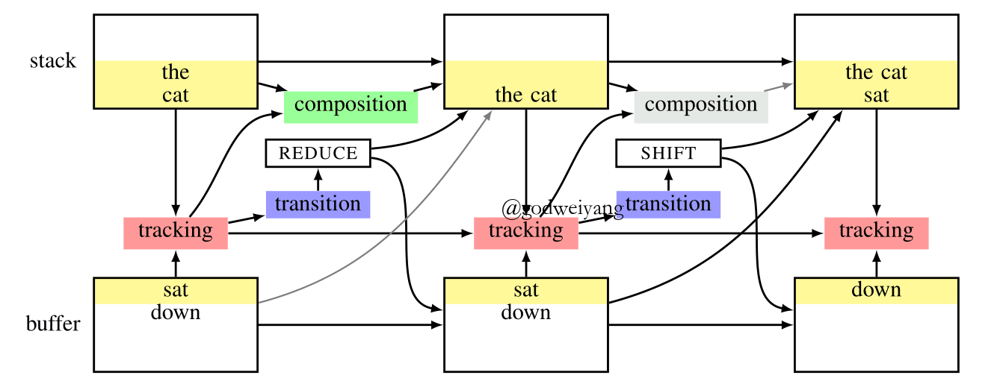
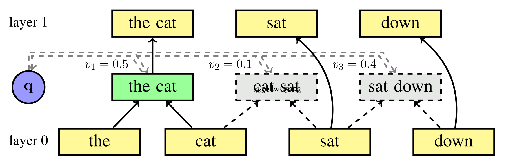
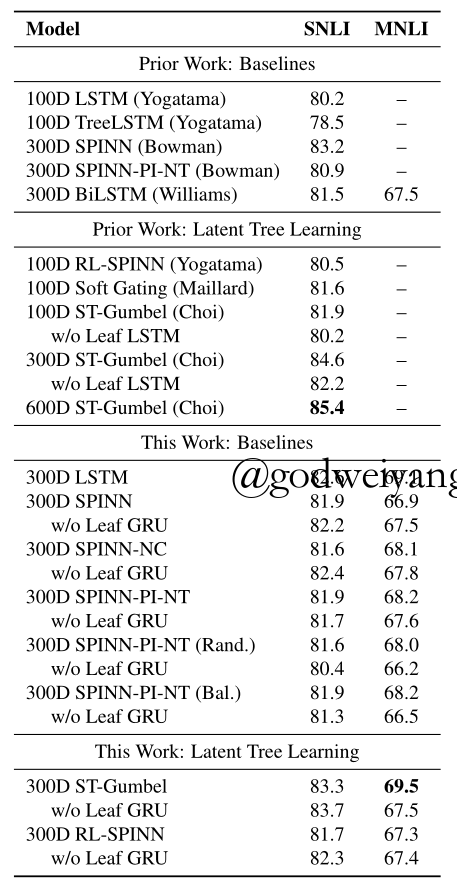
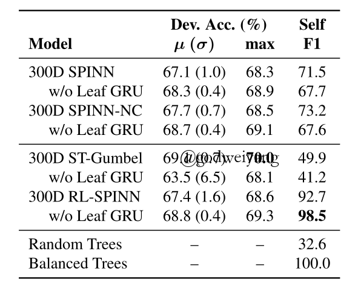
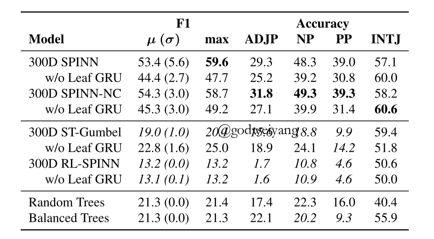
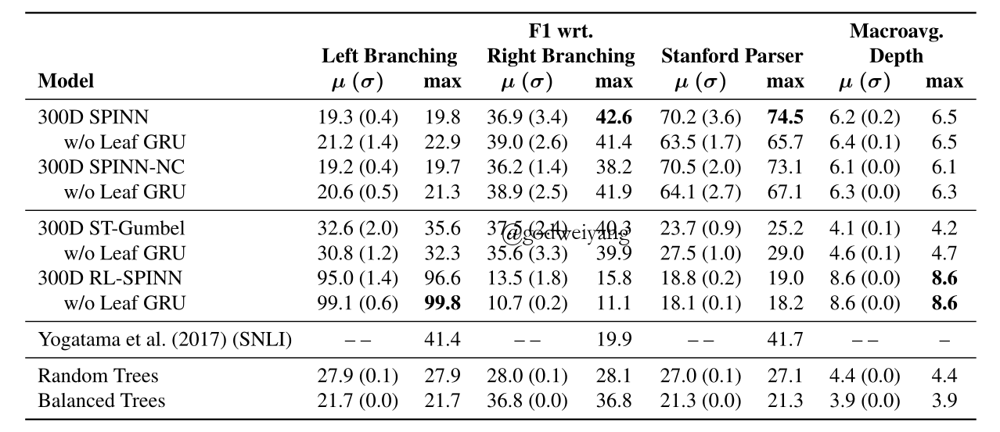

关注公众号【算法码上来】，每日算法干货马上就来！

论文地址：Do latent tree learning models identify meaningful structure in sentences?
本文是一篇分析类论文，主要对近年来几种无监督句法分析模型（RL-SPINN和ST-Gumbel）进行了分析，得出了如下三个结论：
- 在句子分类任务上，只有一种模型效果好于传统的树结构模型。
- 这些模型随机性很大，初始化不同，结果也都差距很大。
- 这些模型产生的句法树的平均深度比PTB数据集的平均深度浅。
介绍
最近有很多工作都是利用Tree-RNN来生成句子的隐式句法树，然后利用下游任务来提供监督，这样就不需要句法树的标注了。利用上隐式句法树的信息之后，下游任务的效果的确能变好，但是几乎没有文章分析过，为什么效果会变好？这个隐式句法树真的学的很不错吗？真的学到了语法吗？如果真的学到了语法，那这对句法和语义学研究者帮助很大。如果没有学到语法，那为什么对下游任务也有帮助呢？这是值得深思的问题。
理解任何自然语言，首先都要识别出它的句子中，哪些单词组合出的短语是有意义的。而对于下面这种句子：“I saw the man with the telescope”，就会产生两种语义。一种是“with the telescope”修饰“the man”，另一种是修饰“saw”。而直接给出这句话，是基本没有办法判断属于哪种语义的，所以还是得依赖上下文来判断。
这篇论文分析了四个问题：
- 隐式句法树提升下游任务性能的程度。
- 隐式句法树模型对于不同的随机初始化，能学到相似句法树的程度。
- 模型学到的语法和PTB语法相似的程度。
- 模型学到的语法和任何可识别的语法规则相近的程度。
模型
这篇论文主要分析了两种模型：SPINN模型及其变体，ST-Gumbel模型。
SPINN模型及其变体

SPINN模型如图1所示，其实它也是基于转移系统的，没有太大区别。唯一区别就是它提出来不是用来做句法分析的，而是用来对句子编码，来产生句子的向量表示。模型的转移系统的句法监督来自于斯坦福的PCFG Parser，所以不一定完全准确，但是对于下游任务性能提升够用了。
然后是RL-SPINN，和SPINN模型基本完全一样。最大的区别就是转移系统不是用现成的parser来提供监督了，而是用下游任务准确率作为得分来做强化学习进行优化。
还有SPINN-NC（No Connection），取消了tracking模块和composition模块的连接，也就是句法树的表示不依赖buffer里的单词了，这样SPINN模型就退化为了Tree-LSTM了，完全等价。这个变体主要用来和ST-Gumbel模型进行对比，因为ST-Gumbel也是用的Tree-LSTM作为composition模块。
最后一个变体是SPINN-PI-NT（Parsed Input, No Tracking），这个变体模型移除了Tracking模块，同时依赖它的两个模块之间的连接也移除了。这个模型的转移系统就没法预测了，只能根据现成的句法树直接转移。这个变体主要用来对比，用现成的parser和训练出来的parser影响有多大。
ST-Gumbel模型

这个模型其实就是使用Tree-RNN来计算任意相邻两个结点的得分，然后合并得分最高的两个结点，最后直到只剩一个根节点。如果是有监督学习的话，这样是可行的。但是现在是无监督，所以中间过程的两个结点的得分是没法直接加入到损失函数里的，而中间过程的决策又是离散的，没法计算梯度。所以提出了用ST Gumbel-Softmax来代替传统的softmax，这样就能估计出反向传播的梯度了，而不用强化学习方法了。
其他对比模型
第一个是单向LSTM和RNN。
第二个还是SPINN-PI-NT，但是转移序列是随机的，不是正确的。
第三个也是SPINN-PI-NT，但是转移序列对应的是最大深度的句法树和平衡二叉树。
这里对几种模型做一个说明。无句法监督的模型只有RL-SPINN和ST-Gumbel两种。单向LSTM和RNN是和句法树没有任何关系的，只用来学习句子的表示。剩下的SPINN，SPINN-NC和SPINN-PI-NT都是需要句法监督的。
数据集
采用了三个数据集，PTB，SNLI和MultiNLI，并且提前都做了二叉化。更多的实验细节就不说了，直接去看论文吧。
隐式句法树对句子理解有帮助吗？

表1是各种模型在SNLI数据集和MultiNLI数据集上的对比结果，其中SNLI是只在SNLI上训练，而MultiNLI是在两个数据集上共同训练。
从表1中可以得出几个结论：
- 首先看Prior Work: Baselines，LSTM和BiLSTM是不学习句法树的，Tree-LSTM和SPINN是监督学习句法树的，SPINN-PI-NT是不学习句法树的，直接根据正确句法树转移。可以看出，SPINN-PI-NT的效果略好于LSTM，不如BiLSTM，所以正确句法树对下游任务的提升是微乎其微的，至少用Tree-LSTM作为composition函数和在NLI数据集上是这样。
- 再看This Work，SPINN-NC是等价于Tree-LSTM的，但是效果比ST-Gumbel差，并且SPINN-NC需要句法监督。这说明了隐式句法树的学习对句子的理解的确有帮助，不管它学到的句法树有没有实际上的意义。
- 观察This Work: Baselines，可以看出来SPINN-PI-NT的几个结果都是和其他模型差不多的，也就是不管你用正确句法树还是用随机或者平衡句法树给模型转移，效果都不行。这说明了影响模型性能的瓶颈并不在parsing策略这一块，parsing的好坏对下游句子理解的影响不大。而RL-SPINN和ST-Gumbel效果略好，但是他们学到的句法树可能是错的。这和第一点结论是一致的，所以今后可以在composition函数上做改进，正确句法树有了，怎么得到它的好的表示是个问题。
- 尽管上面所有模型都没有达到SOTA，但是也很接近了，说明隐式句法树学习的确有效果，还是值得我们去分析的。
结论：隐式句法树对句子理解的确有帮助。
这些模型得出的句法树结果一致吗？

表2是两个句法监督模型，两个无监督模型和两种固定的句法树的对比结果。
从这个结果可以得出两个结论：
- 除了不带Leaf GRU的ST-Gumbel准确率方差有异常，其他的方差都差不多。这说明了超参数和随机初始化对模型性能影响不是很大。
- Self F1方面，两个句法监督模型都在70%左右，而ST-Gumbel模型虽然准确率很高，但是一致性只有50%不到。RL-SPINN的一致性就非常高了，有98%左右，这说明了它可能真的学到了某种语法（事实上并不是的，后面章节会讲）。
结论：除了ST-Gumbel模型，其他模型运行多次结果还是基本一致的。
这些模型学到了PTB语法吗？

表3显示了在SNLI和MultiNLI上训练后的模型，在PTB上测试的结果。
首先可以看出，两个句法监督模型在PTB上的F1也很低，只有四五十左右，但是两个无监督模型更差，甚至不如随机生成的句法树好。这说明了这些模型根本没有学到PTB语法信息。而不同类别的准确率也印证了这一点。

而从表4中可以看出，两个句法监督模型在MultiNLI数据集上的表现也不错，能有六七十左右的F1值，并且模型偏向于预测出右二叉树。而无监督模型效果就很差了，甚至还不如随机生成的句法树和平衡树，并且RL-SPINN模型输出基本都是左二叉树。而根据语言学知识，右二叉树是更符合语法的。
最后一列是不同模型产生出的句法树的深度。可以看出RL-SPINN的深度最大，ST-Gumbel深度最小，和随机生成的差不多。而ST-Gumbel对下游任务提升是最大的，所以可以猜测，深度比较浅，单词的信息可以更好地保留到根节点，句子的编码可能更好。另一篇论文做过实验验证过这件事，他们用句子的平衡树跑Tree-LSTM得到表示来做SNLI，效果很好。
结论：这些无监督模型基本没有学到PTB语法，但是学到的深度较浅的句法树反而对句子理解任务有帮助。
句法树分析
前面几个章节分析出了无监督模型产生的句法树不符合语法规则，但是对下游任务的确有帮助。那这个章节就拿出一些特例，来看看它们到底学出了什么语法规则。
从前面实验可以看出，ST-Gumbel模型学到的语法随机性更大，更值得分析，所以下面只分析这个模型。这个章节分析的篇幅较多，我就直接说结论了：
- 更容易结合头两个单词和最后两个单词。常识上来说，合并最后两个单词没有意义，因为最后一个单词一般是标点符号。但是合并头两个单词还是有意义的，因为一般句子的前两个单词是限定词和名词。
- 更容易结合否定词和紧跟后面的一个词。这个其实有时候符合语法，比如“not”后面紧跟一个形容词，但是比如“not at all”这种就不对了。
- 对于功能词和修饰词，模型结果随机性很大。这一点其实会导致很多短语都分析错了，比如“the”和介词都没有和后面的名词动词合并起来，但神奇的还是对下游任务效果很好。
结论
这篇文章得出的结论是：对下游任务有提升的模型，产生出的句法树不一定是最合乎语法的。
那么为什么它们还能提升效果呢？这篇文章并没有给出解释，未来的工作还是要设计出新的编码结构，来利用本文提出的几种句法树特征。
另一种猜想是，PTB语法规则对于NLI任务不一定是最好的，那么问题是NLI任务需要什么样的语法规则呢？这些模型也没有得出好的结论，因为随机性也很大，提升也不是很大。
最后就是一个工程问题了，如果的确还是PTB语法规则对于提升下游任务性能有帮助，那么怎么提取这种结构呢？现在的几种模型都不能很好的提取出名词短语和介词短语这种结构。
无监督句法分析的前景还是很开阔的，有很多东西值得去探索，ACL 2019的一篇tutorial就是关于自然语言处理中的隐式结构模型的，叫Latent Structure Models for NLP，如果大家有什么好的想法也欢迎和我交流。